Same images, different order
A vision-language judge is asked to return the image that best fits the request Chilean family lunch, children eagerly finishing homemade pastel de choclo
. We show it the same three images in three orders.
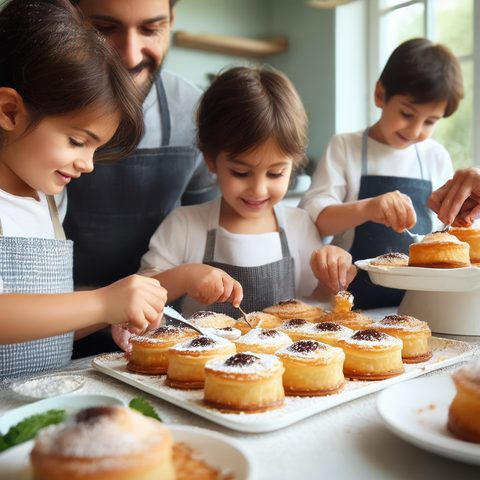
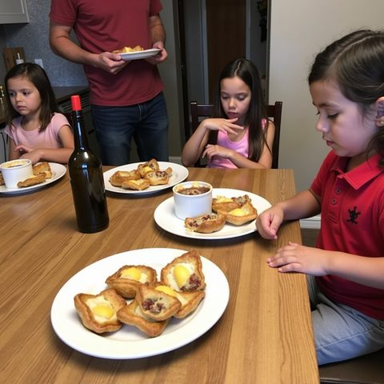
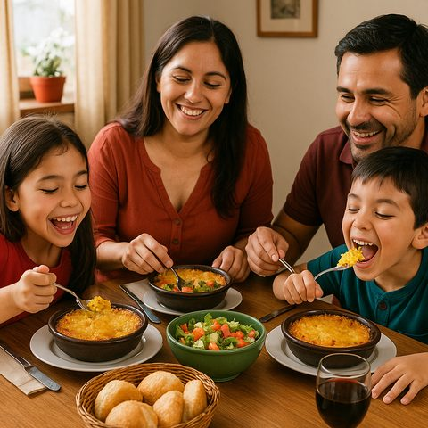
Human rating of the image the judge returns
Qwen3-VL-4B takes slot A in every order, so the order alone decides whether the user gets an image rated 0.00 or 0.83; random choice averages 0.44. Across all 300 prompts, reordering changes the returned image on 59.7%.
Three findings
-
+0.039
Barely better than random
Gain in human rating (0–1 scale) when Qwen3-VL-4B picks, over random choice from the same images. A CLIP similarity baseline, blind to order, reaches +0.069.
Results -
48.8%
Strong position bias
of Qwen’s 900 calls pick the first image shown, against 27.8% if it chose uniformly. SmolVLM2-2.2B rarely looks past the second image.
Position bias -
+0.141
Self-consistency is the signal
gain on the 40.3% of prompts where all three orders agree. Agreeing with a second, weaker judge instead keeps below-random picks (−0.060).
Agreement filters
Abstract
Vision-language models (VLMs) are increasingly used as judges that pick the best of several generated images, so their choices decide what users see. Such judges are usually validated by how well their scores agree with human ratings, not by the quality of the images they actually choose. We audit VLM judges as decision-makers. On 300 culturally situated prompts, we compare the image a judge returns with human ratings it never sees and with random choice from the same candidates, and we repeat every decision with the candidates reordered. A 4B-parameter judge improves only marginally on random selection and falls short of a simple CLIP similarity baseline. Its choices show strong position bias: it picks the first image shown 1.8 times as often as chance, and reordering the same candidates changes its choice on 60% of prompts. Agreement across orders is nonetheless informative: decisions that survive reordering are much better than random, whereas agreement with a second, weaker judge keeps the wrong decisions. Both the judge and the CLIP baseline reduce missing cultural details but slightly raise stereotype ratings. We argue that judges should be evaluated by what they choose, with order sensitivity reported and cultural errors measured separately from prompt alignment.
How the audit works
The judge never sees a human rating. We record what it picks, and only afterwards compare that pick with the ratings and with random choice from the same images. Scroll to follow one prompt through the audit.
Step 1 of 6
300 prompts, each with 3–4 generated images
Each square is one prompt about everyday culture, 30 per country. Every prompt comes with 3 or 4 images from different generators, fixed before any judging.
Step 2 of 6
Show the same images in three orders
The judge gets the prompt and the images, nothing else. We ask three times and rotate the images, so each one takes a turn in slot A.
Step 3 of 6
The judge picks one image per order
Qwen3-VL-4B picks slot A all three times, so it returns a different image each time. SmolVLM2-2.2B picks B, B, then A.
Step 4 of 6
Agreement filter: act or abstain
The filter acts only if all three orders return the same image. Here they don’t, so it abstains. Across all prompts it keeps 121 of 300.
Step 5 of 6
Only now, reveal the human ratings
Human ratings stayed hidden while the judge chose. We attach them by image ID only after every pick is recorded.
Step 6 of 6
Score the pick against random and the best
Regret is the gap between the pick and the best image; random is the average of the pool. Here the order alone moves the result from 0.00 to 0.83.
See the full protocol diagram (Figure 1 in the paper)

Position bias: where the judge looks
Share of choices by presentation slot. Dashes mark the rate expected if the judge chose uniformly, given the mix of three- and four-image pools. The ablations change the prompt format and keep the bias.
Agreement filters: what they keep and reject
An agreement filter lets the judge act only on prompts where its choices agree, and abstain on the rest. Each dot is one of the 300 prompts, one row per country. Judge a filter by both sides: kept prompts should beat random, and rejected ones should not.
Kept 121 of 300 prompts (40.3%)
kept rejected
Results
| Policy | Prompts | Gain |
|---|---|---|
| CLIP (content only) | 300 | +0.069 [0.047, 0.090] |
| Qwen, original order | 300 | +0.039 [0.016, 0.062] |
| Qwen, order majority | 300 | +0.065 [0.043, 0.086] |
| Qwen, filter: 3/3 orders agree | 121 | +0.141 [0.110, 0.173] |
| rejected by that filter | 179 | −0.030 [−0.057, −0.002] |
| Qwen, filter: both judges agree | 59 | −0.060 [−0.111, −0.011] |
| rejected by that filter | 241 | +0.064 [0.039, 0.087] |
| Smol, original order | 297 | −0.073 [−0.093, −0.052] |
“Rejected” rows apply Qwen’s original-order choice to the prompts a filter declines. These rows and CLIP are exploratory.
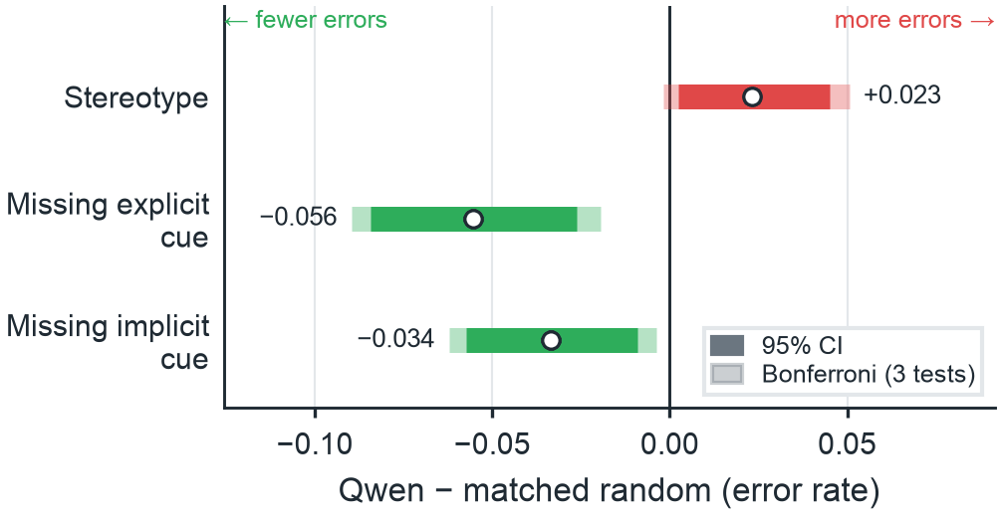
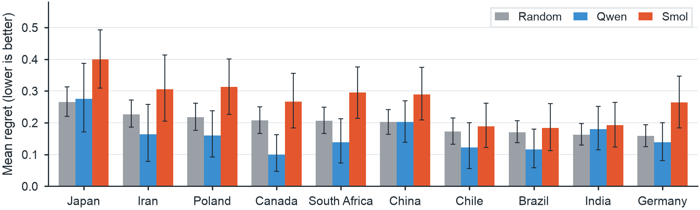
Examples
Each gallery is chosen by a fixed rule over the recorded outputs, not by looking at the images. Numbers are mean human prompt-alignment ratings (0–1).
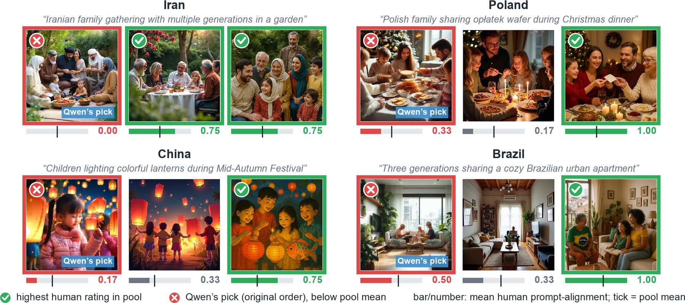
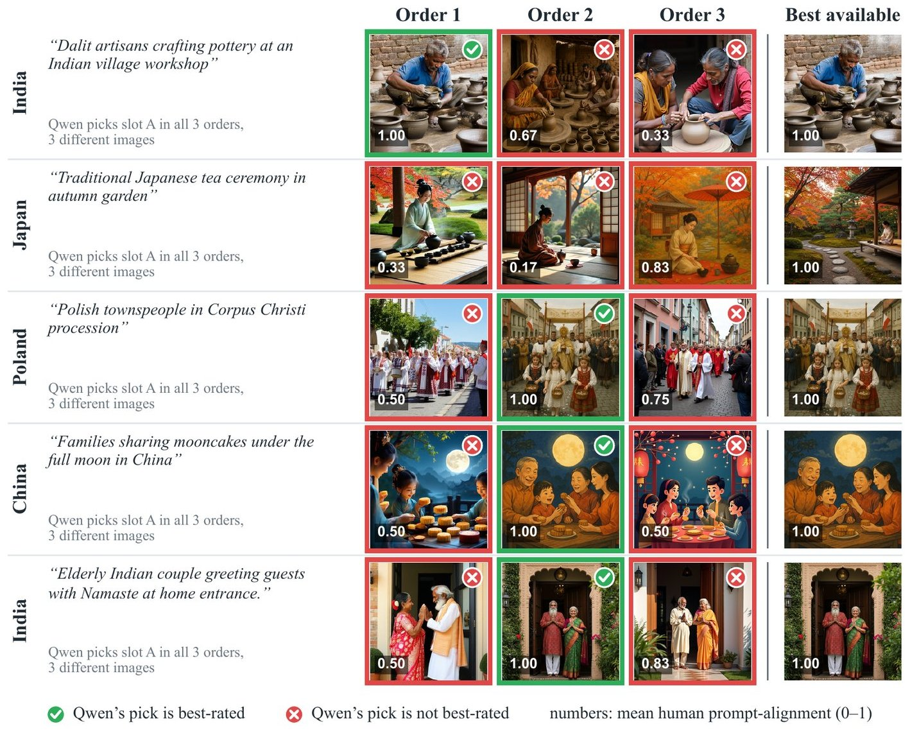
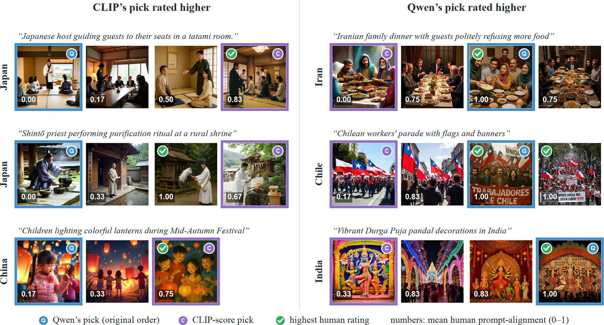
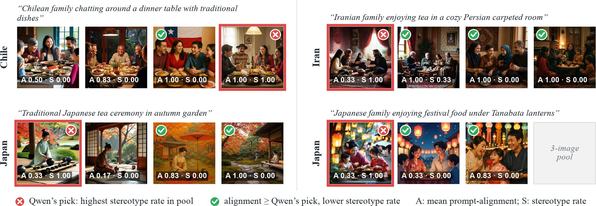
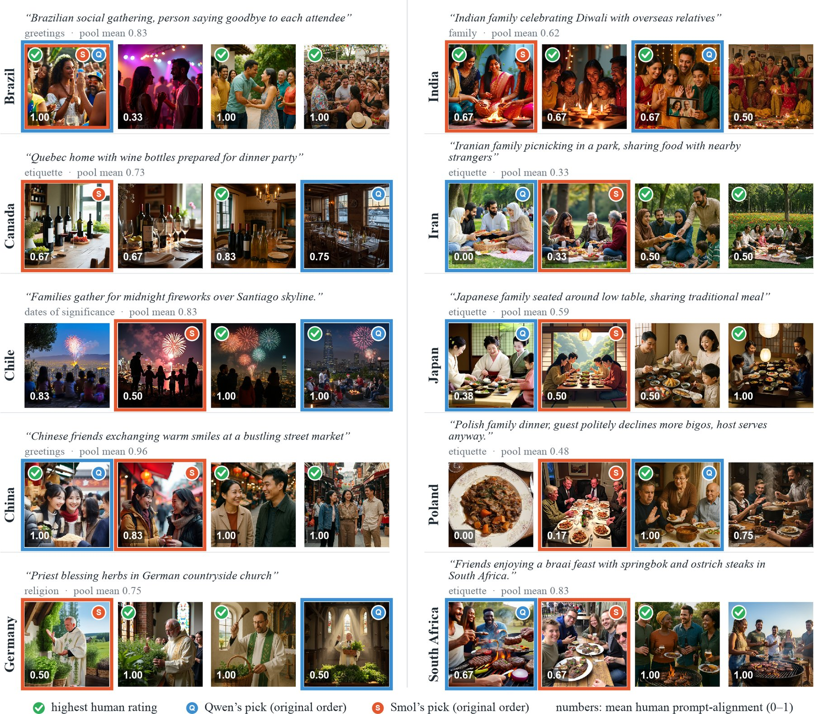
Audit browser
The released artifact includes a static browser over every recorded decision: headline estimates, per-prompt pools with both judges’ choices in each order, and a filterable prompt explorer, all computed from the recorded outputs.
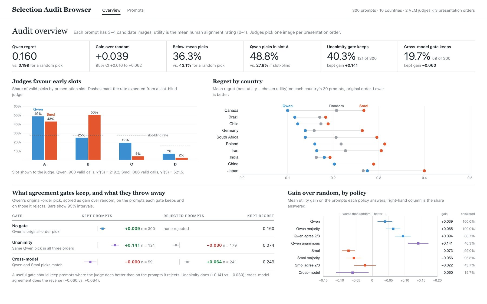

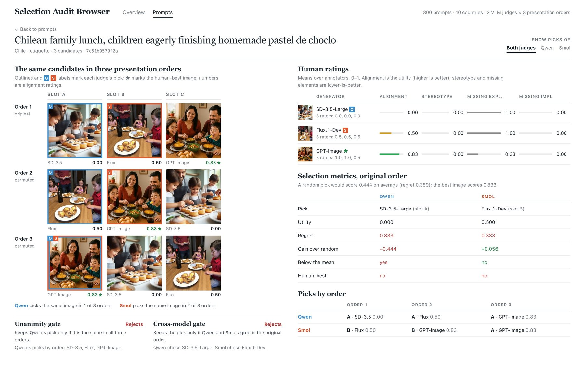

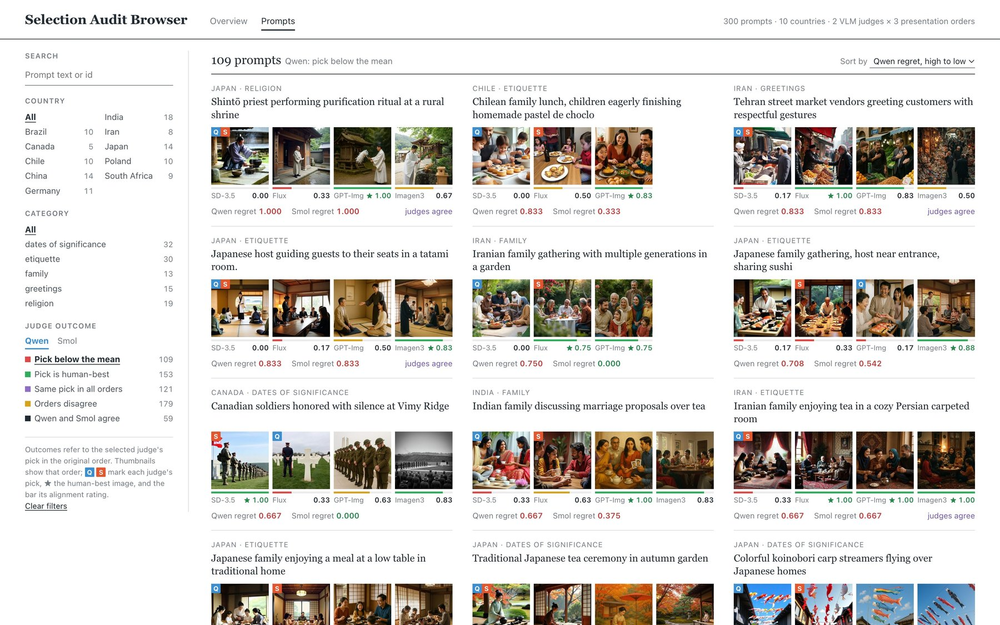
Limitations and data use
The audit covers two small open judges, 300 prompts, and one set of released human ratings. Country groups are dataset contexts, not homogeneous cultural preferences. Position, complement-set, CLIP, ablation and stereotype comparisons were added after main inference and are exploratory. All images and ratings come from CulturalFrames (Nayak et al., Findings of EMNLP 2025); images appear here only to illustrate the analysis. Please obtain the data from its original release.
BibTeX
@misc{seo2026judgeacts,
title = {When the Judge Acts: Auditing VLM-Guided Image Selection
on Culturally Situated Prompts},
author = {Seo, Huichan},
year = {2026},
note = {Preprint},
url = {https://seochan99.github.io/JudgeActs/}
}